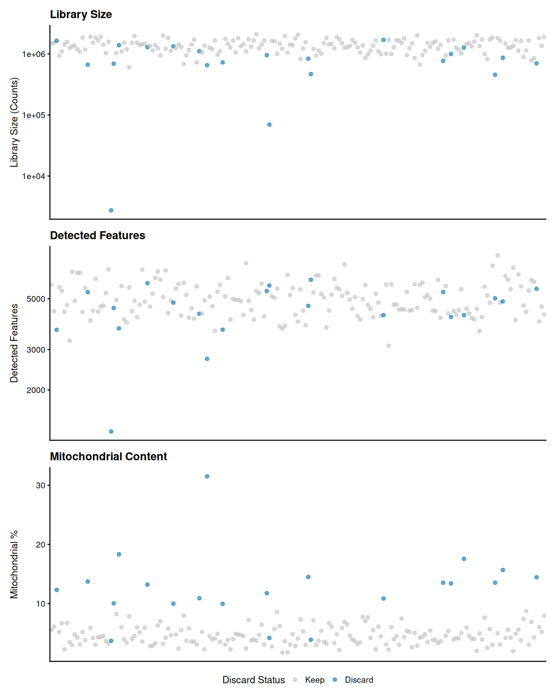
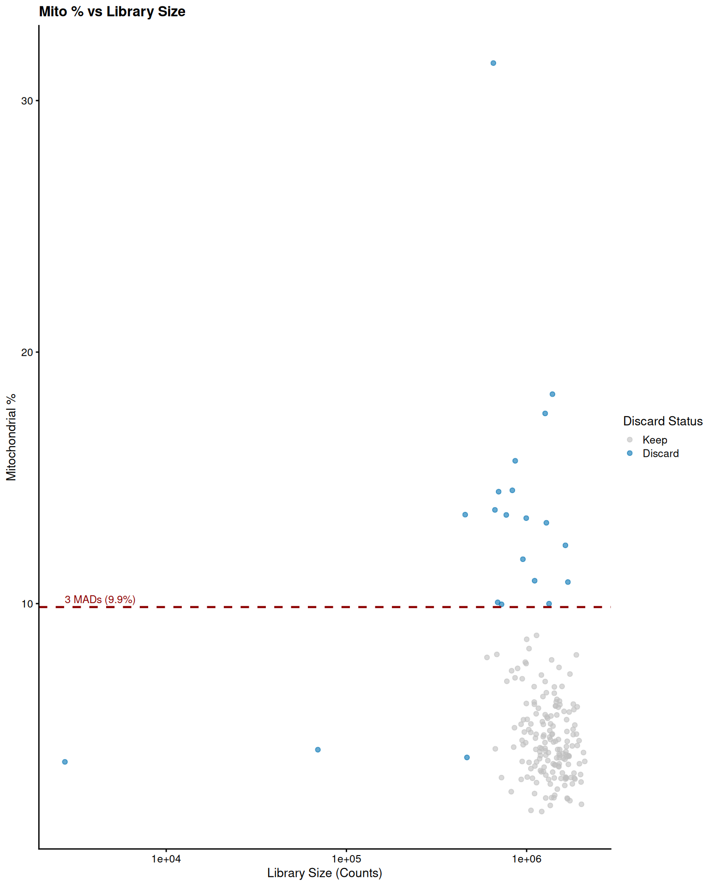
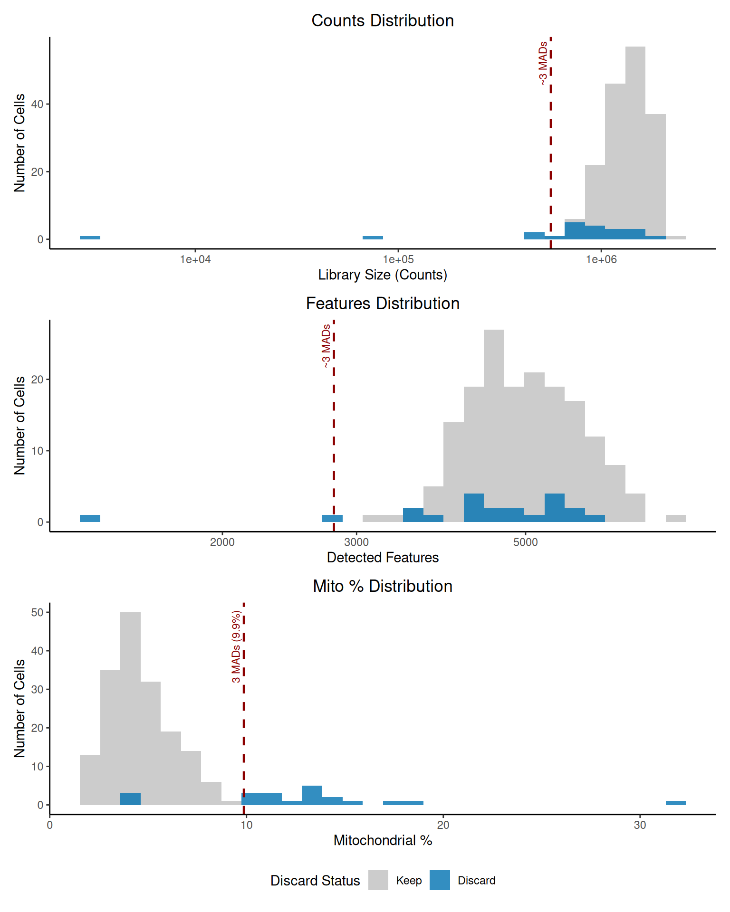

This report details the quality control (QC) process applied to a
SingleCellExperiment object derived from single-cell
RNA-seq data (mouse sample, Ensembl gene IDs). The goal is to identify
and remove potentially low-quality cells based on library size, number
of detected genes, and mitochondrial gene content percentage. We use
adaptive thresholds based on median absolute deviations (MADs) from the
median. This version uses a revised color scheme suitable for
presentations.
First, we load the pre-existing SingleCellExperiment
object. Ensure the object named sce is available in your R
environment or load it from a saved file.
The object has 38886 genes and 191 cells, with assays for
counts and tpm. Row data includes
gene_id and symbol, while column data
currently only contains cell_id.
To calculate the percentage of counts coming from mitochondrial
genes, we first identify which genes are mitochondrial using the
org.Mm.eg.db annotation package.
ensembl_ids <- rownames(sce)
is_mito <- rep(FALSE, nrow(sce))
tryCatch({
gene_info <- AnnotationDbi::select(org.Mm.eg.db,
keys = ensembl_ids,
columns = c("ENSEMBL", "CHR"),
keytype = "ENSEMBL")
gene_info <- gene_info[!duplicated(gene_info$ENSEMBL) & !is.na(gene_info$CHR), ]
id_to_chr <- setNames(gene_info$CHR, gene_info$ENSEMBL)
is_mito_mapped <- id_to_chr[rownames(sce)] == "MT"
is_mito_mapped[is.na(is_mito_mapped)] <- FALSE
is_mito <- is_mito_mapped
if (sum(is_mito) == 0) {
warning("No mitochondrial genes were identified using org.Mm.eg.db. Check ENSEMBL IDs and annotation package. Mitochondrial QC filtering will be skipped.")
}
}, error = function(e) {
warning("Error mapping ENSEMBL IDs to Chromosomes using org.Mm.eg.db: ", e$message)
warning("Proceeding without mitochondrial gene filtering.")
})
rowData(sce)$is_mito <- is_mitoUsing the annotations, 13 mitochondrial genes were identified.
We use scater::addPerCellQC to calculate standard QC
metrics (sum, detected,
subsets_mt_percent).
This step adds columns like sum (total counts),
detected (number of expressed genes), and
subsets_mt_percent (percentage of counts from mitochondrial
genes) to the colData of the sce object.
We identify outliers based on 3 MADs from the median for library size
(sum), detected features (detected), and
mitochondrial percentage (subsets_mt_percent).
filter_by_counts <- isOutlier(sce$sum, nmads = 3, type = "lower", log = TRUE)
filter_by_features <- isOutlier(sce$detected, nmads = 3, type = "lower", log = TRUE)
filter_by_mito <- rep(FALSE, ncol(sce))
if ("subsets_mt_percent" %in% colnames(colData(sce))) {
filter_by_mito <- isOutlier(sce$subsets_mt_percent, nmads = 3, type = "higher")
}
discard <- filter_by_counts | filter_by_features | filter_by_mito
colData(sce)$discard <- factor(discard) Based on the MAD thresholds:
4 cells were flagged for low library size.
2 cells were flagged for low detected features.
18 cells were flagged for high mitochondrial content percentage.
In total, 21 unique cells are marked for removal.
Visualizing the distributions helps to confirm if the adaptive thresholds are reasonable. We use the revised color scheme.
p1 <- plotColData(sce, x = "cell_id", y = "sum", colour_by = "discard") +
scale_y_log10(name = "Library Size (Counts)") +
ggtitle("Library Size") +
theme(axis.text.x = element_blank(), axis.ticks.x = element_blank(), axis.title.x = element_blank()) +
scale_color_manual(values = c("FALSE" = keep_color, "TRUE" = discard_color),
name = "Discard Status", labels = c("Keep", "Discard"))
p2 <- plotColData(sce, x = "cell_id", y = "detected", colour_by = "discard") +
scale_y_log10(name = "Detected Features") +
ggtitle("Detected Features") +
theme(axis.text.x = element_blank(), axis.ticks.x = element_blank(), axis.title.x = element_blank()) +
scale_color_manual(values = c("FALSE" = keep_color, "TRUE" = discard_color),
name = "Discard Status", labels = c("Keep", "Discard"))
plot_list <- list(p1, p2)
if ("subsets_mt_percent" %in% colnames(colData(sce))) {
p3 <- plotColData(sce, x = "cell_id", y = "subsets_mt_percent", colour_by = "discard") +
scale_y_continuous(name = "Mitochondrial %") +
ggtitle("Mitochondrial Content") +
theme(axis.text.x = element_blank(), axis.ticks.x = element_blank(), axis.title.x = element_blank()) +
scale_color_manual(values = c("FALSE" = keep_color, "TRUE" = discard_color),
name = "Discard Status", labels = c("Keep", "Discard"))
plot_list <- list(p1, p2, p3)
mito_threshold_val <- median(sce$subsets_mt_percent) + 3*mad(sce$subsets_mt_percent)
p4 <- plotColData(sce, x = "sum", y = "subsets_mt_percent", colour_by = "discard") +
scale_x_log10(name = "Library Size (Counts)") +
scale_y_continuous(name = "Mitochondrial %") +
ggtitle("Mito % vs Library Size") +
scale_color_manual(values = c("FALSE" = keep_color, "TRUE" = discard_color),
name = "Discard Status", labels = c("Keep", "Discard")) +
geom_hline(yintercept=mito_threshold_val, linetype="dashed", color=threshold_color, size=0.8) +
annotate("text", x = min(sce$sum), y = mito_threshold_val,
label = paste0("3 MADs (", round(mito_threshold_val,1), "%)"),
hjust = 0, vjust = -0.5, color = threshold_color, size = 3)
}
wrap_plots(plot_list, ncol = 1, guides = "collect") & theme(legend.position = "bottom")
if (exists("p4")) {
print(p4)
}
qc_df <- as.data.frame(colData(sce))
counts_threshold_val <- median(sce$sum / exp(3*mad(log(sce$sum))))
features_threshold_val <- median(sce$detected / exp(3*mad(log(sce$detected))))
h1 <- ggplot(qc_df, aes(x=sum, fill=discard)) +
geom_histogram(bins=30, alpha=0.8, position="identity") +
scale_x_log10(name = "Library Size (Counts)") +
scale_y_continuous(name = "Number of Cells") +
ggtitle("Counts Distribution") +
scale_fill_manual(values = c("FALSE" = keep_color, "TRUE" = discard_color),
name = "Discard Status", labels = c("Keep", "Discard")) +
geom_vline(xintercept=counts_threshold_val, linetype="dashed", color=threshold_color, size=0.8) +
annotate("text", x = counts_threshold_val, y = Inf,
label = paste0("~3 MADs"), angle = 90,
hjust = 1.1, vjust = -0.5, color = threshold_color, size = 3)
h2 <- ggplot(qc_df, aes(x=detected, fill=discard)) +
geom_histogram(bins=30, alpha=0.8, position="identity") +
scale_x_log10(name = "Detected Features") +
scale_y_continuous(name = "Number of Cells") +
ggtitle("Features Distribution") +
scale_fill_manual(values = c("FALSE" = keep_color, "TRUE" = discard_color),
name = "Discard Status", labels = c("Keep", "Discard")) +
geom_vline(xintercept=features_threshold_val, linetype="dashed", color=threshold_color, size=0.8) +
annotate("text", x = features_threshold_val, y = Inf,
label = paste0("~3 MADs"), angle = 90,
hjust = 1.1, vjust = -0.5, color = threshold_color, size = 3)
hist_list <- list(h1, h2)
if ("subsets_mt_percent" %in% colnames(colData(sce))) {
mito_threshold_val <- median(sce$subsets_mt_percent) + 3*mad(sce$subsets_mt_percent)
h3 <- ggplot(qc_df, aes(x=subsets_mt_percent, fill=discard)) +
geom_histogram(bins=30, alpha=0.8, position="identity") +
scale_x_continuous(name = "Mitochondrial %") +
scale_y_continuous(name = "Number of Cells") +
ggtitle("Mito % Distribution") +
scale_fill_manual(values = c("FALSE" = keep_color, "TRUE" = discard_color),
name = "Discard Status", labels = c("Keep", "Discard")) +
geom_vline(xintercept=mito_threshold_val, linetype="dashed", color=threshold_color, size=0.8) +
annotate("text", x = mito_threshold_val, y = Inf,
label = paste0("3 MADs (", round(mito_threshold_val,1), "%)"), angle = 90,
hjust = 1.1, vjust = -0.5, color = threshold_color, size = 3)
hist_list <- list(h1, h2, h3)
}
wrap_plots(hist_list, ncol = 1, guides = "collect") & theme(legend.position = "bottom")
The plots show the distribution of each metric across all cells using the updated color scheme (grey75 for kept, #0072B2 for discarded). Cells marked for removal are highlighted. Dashed red lines indicate the approximate MAD-based thresholds used for filtering. Violin/dot plots show individual cell values, while histograms show the overall distributions. The scatter plot illustrates the relationship between library size and mitochondrial content, often revealing damaged cells with high mitochondrial percentage despite low library size.
Finally, we subset the sce object to remove the cells
flagged by the discard column.
dim_before <- dim(sce)
sce$discard <- as.logical(sce$discard)
sce_filtered <- sce[, !sce$discard]
dim_after <- dim(sce_filtered)
saveRDS(sce_filtered, file = "sce_filtered_presentation.rds")The SingleCellExperiment object was filtered based on
the QC metrics.
Dimensions before filtering: 38886 genes, 191 cells.
Dimensions after filtering: 38886 genes, 170 cells.
Number of cells removed: 21.
The filtered object (sce_filtered) has been saved to
sce_filtered_presentation.rds.
The QC process identified and removed 21 cells based on adaptive
thresholds for library size, detected features, and mitochondrial
content percentage. The resulting filtered object,
sce_filtered, contains 170 cells and is ready for
downstream analysis. The visualizations confirm the rationale behind the
filtering decisions using a presentation-friendly color scheme.